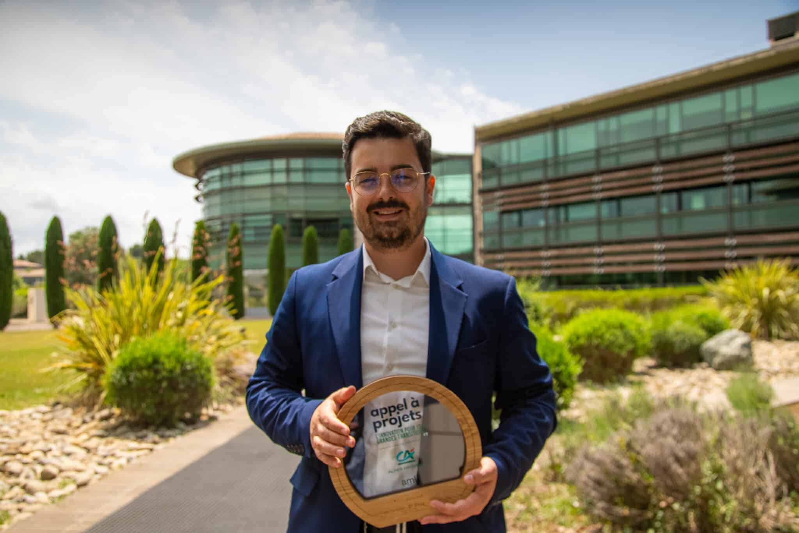

Sélectionnez un projet
Choisissez une fiche à gauche pour afficher son résumé.
Ce projet vise à recenser les sujets de recherche que nous avons abordés au sein de notre hôpital, concernant la thématique écologique. L'objectif est de partager les méthodologies, outils, sources, et résultats obtenus, afin de mieux communiquer, rendre ces projets reproductibles d'un centre à l'autre, et promouvoir l'écologie en pharmacie hospitalière.
Filtrage par thématique et par statut. Le détail s’affiche dans le panneau de droite.
Choisissez une fiche à gauche pour afficher son résumé.
Référentiels et outils utilisés actuellement pour documenter l’impact du soin, du circuit du médicament et des projets territoriaux.
Nous utilisons plusieurs sources pour nos travaux, chacune ayant des applicabilités et limites différentes.
Les hypothèses de calcul que nous utilisons, pour la destruction des médicaments non administrés (issues de la data de l'ADEME) sont accessibles ici.
Outils numériques développés ou mobilisés dans le cadre des travaux menés en pharmacie hospitalière.
Logiciel d’aide à la standardisation des doses et à l’anticipation de la production de chimiothérapies. L’outil vise à faciliter le dimensionnement des préparations, le suivi de l’activité et l’analyse des volumes produits.
Outil de compilation de données de stabilité pour perfusion en intra et extra-hospitalier. Cette base sert de socle aux travaux sur l’impact économique et écologique des différentes méthodes de perfusion.
Publications, communications orales, conférences et posters issus des projets menés.

Pharmacien hospitalier sur le secteur médicament au CHICAS (Gap), responsable des jeunes pharmaciens européens à l’EAHP, impliqué sur la thématique de l’écologie en santé.
Voir le profil LinkedInPharmacien chercheur & assistant spécialiste au CHICAS (Gap), en charge d’une unité d’HAD territoriale, expérimente sur son service diverses approches avec plus ou moins de succès.
Voir le profil LinkedInQuelques ressources et structures utiles pour prolonger la réflexion ou situer les travaux dans un écosystème plus large.
Collectif d’écoresponsabilité en pharmacie clinique (groupe de travail SFPC).
Réflexion systémique sur la décarbonation du système de santé.
Présentation de l’outil Carebone mis à disposition des professionnels de santé.
Référentiel utilisé pour certaines estimations environnementales des médicaments.
Ressource complémentaire utile pour confronter certaines approches et données.
Ressource plus large autour des ACV et des approches environnementales en santé.
Ce site n’est pas un référentiel officiel. Il s’agit d’un projet indépendant, construit à partir de nos travaux, de nos hypothèses et de nos retours d’expérience. Il peut donc contenir des inexactitudes, des simplifications ou des éléments encore en cours de discussion.
L’objectif est surtout de partager une démarche, de rendre visibles des projets de terrain et de proposer un support de discussion ou de reproduction pour d’autres équipes.